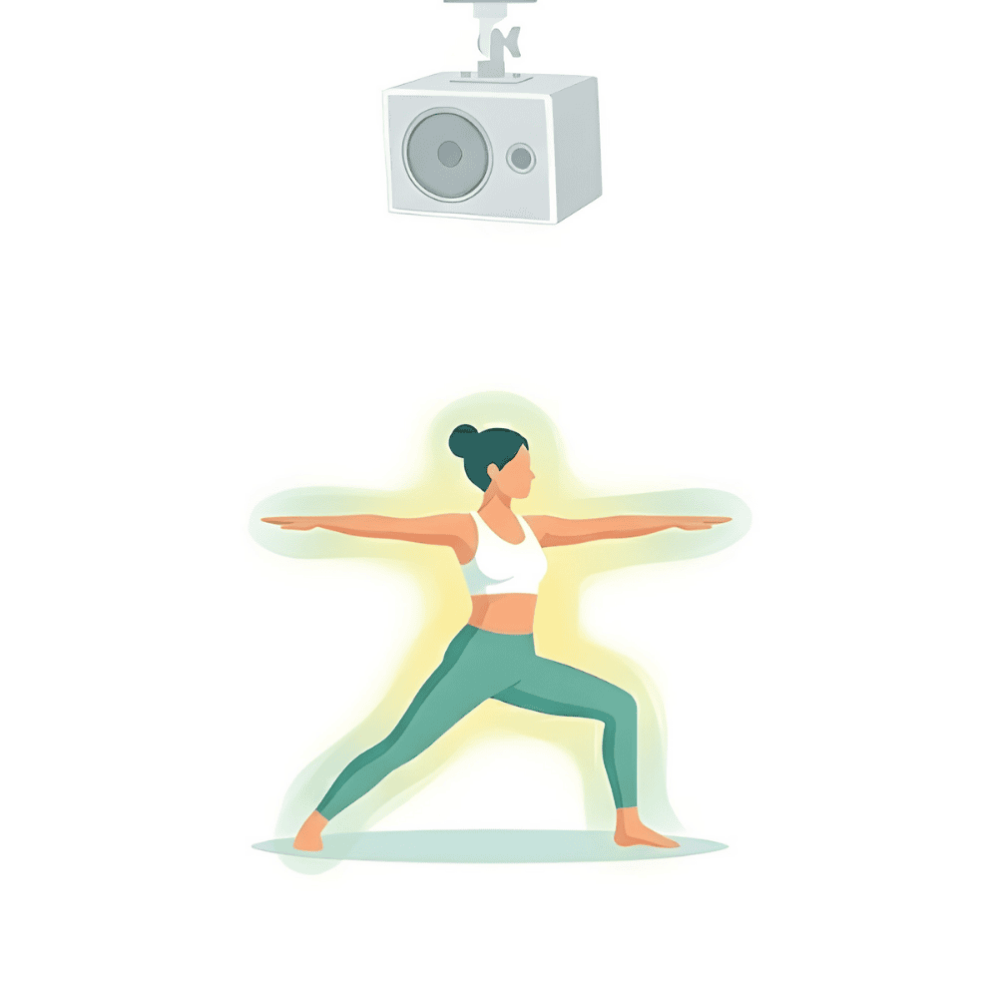

<!DOCTYPE html>
<html lang="ja">
<head>
    <meta charset="UTF-8">
    <meta name="viewport" content="width=device-width, initial-scale=1.0">
    <title>リラックス感覚の増大（比較資料）</title>
    <!-- Tailwind CSS -->
    <script src="https://cdn.tailwindcss.com"></script>
    <!-- React & ReactDOM -->
    <script crossorigin src="https://unpkg.com/react@18/umd/react.production.min.js"></script>
    <script crossorigin src="https://unpkg.com/react-dom@18/umd/react-dom.production.min.js"></script>
    <!-- Babel (JSX変換用) -->
    <script src="https://unpkg.com/@babel/standalone/babel.min.js"></script>
    
    <style>
        body { font-family: "Helvetica Neue", Arial, "Hiragino Kaku Gothic ProN", "Hiragino Sans", Meiryo, sans-serif; }
    </style>
</head>
<body class="bg-gray-100 text-gray-800">
    <div id="root"></div>

    <script type="text/babel">
        // アイコンコンポーネント (Lucide Icons SVG)
        const UserCheckIcon = ({ className }) => (
            <svg xmlns="http://www.w3.org/2000/svg" viewBox="0 0 24 24" fill="none" stroke="currentColor" strokeWidth="2" strokeLinecap="round" strokeLinejoin="round" className={className}><path d="M16 21v-2a4 4 0 0 0-4-4H6a4 4 0 0 0-4 4v2" /><circle cx="9" cy="7" r="4" /><polyline points="16 11 18 13 22 9" /></svg>
        );
        const ActivityIcon = ({ className }) => (
            <svg xmlns="http://www.w3.org/2000/svg" viewBox="0 0 24 24" fill="none" stroke="currentColor" strokeWidth="2" strokeLinecap="round" strokeLinejoin="round" className={className}><path d="M22 12h-4l-3 9L9 3l-3 9H2" /></svg>
        );
        const ShieldCheckIcon = ({ className }) => (
            <svg xmlns="http://www.w3.org/2000/svg" viewBox="0 0 24 24" fill="none" stroke="currentColor" strokeWidth="2" strokeLinecap="round" strokeLinejoin="round" className={className}><path d="M12 22s8-4 8-10V5l-8-3-8 3v7c0 6 8 10 8 10" /><path d="m9 12 2 2 4-4" /></svg>
        );
        const InfoIcon = ({ className }) => (
            <svg xmlns="http://www.w3.org/2000/svg" viewBox="0 0 24 24" fill="none" stroke="currentColor" strokeWidth="2" strokeLinecap="round" strokeLinejoin="round" className={className}><circle cx="12" cy="12" r="10" /><path d="M12 16v-4" /><path d="M12 8h.01" /></svg>
        );
        const TrendingDownIcon = ({ className }) => (
            <svg xmlns="http://www.w3.org/2000/svg" viewBox="0 0 24 24" fill="none" stroke="currentColor" strokeWidth="2" strokeLinecap="round" strokeLinejoin="round" className={className}><polyline points="23 18 13.5 8.5 8.5 13.5 1 6" /><polyline points="17 18 23 18 23 12" /></svg>
        );

        const RelaxationComparison = () => {
            return (
                <div className="min-h-screen p-4 md:p-8 font-sans flex justify-center bg-gray-100">
                    <div className="max-w-4xl w-full bg-white shadow-xl rounded-lg overflow-hidden">
                        
                        {/* Header Section */}
                        <div className="p-6 md:p-8 border-b border-gray-100">
                            <h1 className="text-2xl md:text-3xl font-bold text-gray-800 mb-4 flex items-center flex-wrap gap-2">
                                リラックス感覚の増大
                                <span className="text-sm align-top text-gray-500">※1</span>
                                <span className="text-lg md:text-xl text-teal-600 font-medium whitespace-nowrap">（副交感神経優位）</span>
                            </h1>
                            <p className="text-gray-600 leading-relaxed text-sm md:text-base">
                                日本レジリエンス医学研究所によるモニター検証を行ったところ、波動スピーカー（エムズシステム）を使用した空間では、
                                既存のスピーカーを使用した場合と比較して、<span className="font-bold text-gray-800 bg-yellow-100 px-1">「リラックス感覚（副交感神経の活性）」に統計的な有意差</span>が認められました。
                            </p>
                        </div>

                        {/* Comparison Section (Main Visual) */}
                        <div className="bg-[#fcfdf9] p-6 md:p-10">
                            <div className="text-center mb-8">
                                <h2 className="text-xl md:text-2xl font-bold text-teal-800 border-b-2 border-teal-800 inline-block px-4 pb-1">
                                    空間による「リラックス度」の比較<span className="text-sm ml-1">※1</span>
                                </h2>
                            </div>

                            <div className="flex flex-col md:flex-row items-stretch justify-center gap-6 md:gap-8 relative">
                                
                                {/* Left Box (Hado Speaker) */}
                                <div className="flex-1 bg-gradient-to-b from-teal-50 to-white rounded-xl border-4 border-teal-500 shadow-xl p-1 flex flex-col items-center text-center relative overflow-hidden transform md:-translate-y-2">
                                    <div className="w-full h-full bg-white rounded-lg p-5 flex flex-col items-center">
                                        <div className="absolute top-0 left-0 w-full h-3 bg-teal-500"></div>
                                        <h3 className="font-bold text-lg md:text-xl text-teal-800 mb-2 mt-2">
                                            波動スピーカーの空間<br/>
                                            <span className="text-sm font-normal text-teal-600">（エムズシステム）</span>
                                        </h3>
                                        
                                        <div className="bg-yellow-400 text-teal-900 font-black text-6xl w-28 h-28 rounded-full flex items-center justify-center shadow-lg mb-4 z-10 border-4 border-white">
                                            大
                                        </div>
                                        
                                        {/* Image Display: ms.png */}
                                        <div className="relative mb-4 w-full flex items-center justify-center">
                                             {
                                                    e.target.onerror = null;
                                                    e.target.style.display = 'none';
                                                    e.target.parentNode.innerHTML = '<div class="p-4 bg-gray-100 rounded text-gray-500 text-sm">画像読み込みエラー<br>ms.pngを配置してください</div>';
                                                }}
                                            />
                                        </div>

                                        {/* Evidence Data Section */}
                                        <div className="w-full bg-teal-50 rounded-lg p-3 border border-teal-100 mt-auto">
                                            <p className="text-xs text-teal-800 font-bold mb-2 text-left border-b border-teal-200 pb-1">検証データ詳細（統計的有意差）</p>
                                            
                                            <div className="flex items-center justify-between mb-2">
                                                <div className="text-left">
                                                    <span className="block text-xs font-bold text-gray-700">心のバランスが整う</span>
                                                    <span className="text-[10px] text-gray-500">(TMD:総合的気分状態の改善)</span>
                                                </div>
                                                <div className="bg-white px-2 py-1 rounded border border-teal-200 text-teal-700 font-bold text-xs flex items-center">
                                                    <TrendingDownIcon className="w-3 h-3 mr-1" />
                                                    p=0.01
                                                </div>
                                            </div>

                                            <div className="flex items-center justify-between">
                                                <div className="text-left">
                                                    <span className="block text-xs font-bold text-gray-700">深い安らぎ（リラックス）</span>
                                                    <span className="text-[10px] text-gray-500">(LF:交感神経の鎮静化)</span>
                                                </div>
                                                <div className="bg-white px-2 py-1 rounded border border-teal-200 text-teal-700 font-bold text-xs flex items-center">
                                                    <TrendingDownIcon className="w-3 h-3 mr-1" />
                                                    p=0.02
                                                </div>
                                            </div>
                                        </div>
                                    </div>
                                </div>

                                {/* Center Arrow (Desktop) */}
                                <div className="hidden md:flex items-center justify-center text-gray-300">
                                    <svg width="40" height="40" viewBox="0 0 24 24" fill="none" stroke="currentColor" strokeWidth="2" strokeLinecap="round" strokeLinejoin="round">
                                        <path d="M9 18l6-6-6-6" />
                                    </svg>
                                </div>
                                {/* Center Arrow (Mobile) */}
                                <div className="md:hidden flex justify-center text-gray-300 -my-2">
                                    <svg width="30" height="30" viewBox="0 0 24 24" fill="none" stroke="currentColor" strokeWidth="2" strokeLinecap="round" strokeLinejoin="round">
                                        <path d="M6 9l6 6 6-6" />
                                    </svg>
                                </div>

                                {/* Right Box (Standard Speaker) */}
                                <div className="flex-1 bg-gray-50 rounded-xl border border-gray-300 p-1 flex flex-col items-center text-center opacity-90 transform scale-95">
                                    <div className="w-full h-full bg-gray-50 rounded-lg p-5 flex flex-col items-center">
                                        <h3 className="font-bold text-lg md:text-xl text-gray-700 mb-2 mt-2">
                                            既存スピーカーの空間<br/>
                                            <span className="text-sm font-normal text-gray-500">（指向性スピーカー）</span>
                                        </h3>
                                        
                                        <div className="bg-yellow-100 text-gray-600 font-black text-4xl w-20 h-20 rounded-full flex items-center justify-center shadow-sm mb-4 border-4 border-white grayscale">
                                            小
                                        </div>

                                        {/* Image Display: normal.png */}
                                        <div className="relative mb-6 w-full flex items-center justify-center">
                                             {
                                                    e.target.onerror = null;
                                                    e.target.style.display = 'none';
                                                    e.target.parentNode.innerHTML = '<div class="p-4 bg-gray-100 rounded text-gray-500 text-sm">画像読み込みエラー<br>normal.pngを配置してください</div>';
                                                }}
                                            />
                                        </div>

                                        <div className="mt-auto w-full">
                                            <p className="text-sm text-gray-500 font-medium bg-white px-4 py-3 rounded-lg border border-gray-200">
                                                一般的なリラックス度
                                            </p>
                                        </div>
                                    </div>
                                </div>

                            </div>
                        </div>

                        {/* Customer Voices Section */}
                        <div className="bg-orange-50 p-6 md:p-8 border-t border-orange-100">
                            <div className="flex items-start gap-3 mb-4">
                                <UserCheckIcon className="w-6 h-6 text-orange-500 flex-shrink-0 mt-1" />
                                <h3 className="font-bold text-lg text-gray-800">
                                    【参考】ご愛用者様・体験者様のお声
                                </h3>
                            </div>
                            <p className="text-sm text-gray-600 mb-4 pl-9">
                                本製品を導入された施設の利用者様や、ご愛用者様より、心身の健康に関する多くのポジティブなお声をいただいております。
                            </p>
                            
                            <div className="grid grid-cols-1 md:grid-cols-2 gap-4 pl-0 md:pl-9">
                                <div className="bg-white p-4 rounded-lg shadow-sm border border-orange-100">
                                    <div className="flex items-center gap-2 mb-2 text-orange-600 font-bold text-sm">
                                        <ActivityIcon className="w-4 h-4" />
                                        心身の調律と元気の回復
                                    </div>
                                    <p className="text-sm text-gray-700 leading-relaxed">
                                        「心身ともに浄化、調律されていく感じです。このスピーカーを聴いて、元気を恢復して生きたいです。」<br/>
                                        「聴いていると体の血流がよくなり、頭の中が空っぽになって深いリラックス状態になりました。」
                                    </p>
                                </div>
                                <div className="bg-white p-4 rounded-lg shadow-sm border border-orange-100">
                                    <div className="flex items-center gap-2 mb-2 text-orange-600 font-bold text-sm">
                                        <ShieldCheckIcon className="w-4 h-4" />
                                        免疫・健康維持について
                                    </div>
                                    <p className="text-sm text-gray-700 leading-relaxed">
                                        「このスピーカーから出る心地よい音は、私にとってすでに1台の治療器具を得たに等しいと感じております。」<br/>
                                        「力を持った音、すなわち「波動」は、使っていない神経や体のある部分に刺激を与え、それが動き出すようにしてくれます。部屋の空気も柔らかくなりました。」
                                    </p>
                                </div>
                            </div>
                            <p className="text-xs text-gray-500 mt-3 text-right">
                                ※上記は個人の感想であり、効果効能を保証するものではありません。
                            </p>
                        </div>

                        {/* Footer / Citations */}
                        <div className="bg-gray-50 p-4 text-[10px] md:text-xs text-gray-500 leading-relaxed border-t border-gray-200">
                            <div className="flex items-start gap-2">
                                <InfoIcon className="w-3 h-3 mt-0.5 flex-shrink-0" />
                                <div>
                                    <p className="mb-1">
                                        <span className="font-bold">※1 検証概要：</span>
                                        今回の検証（成人男女を対象とした実測）により、客観的評価である心拍変動解析と、主観的評価であるPOMS2の双方において、これまで波動スピーカーのユーザーから寄せられていた「リラックスできる」という感想を裏付ける結果が得られた。主観と客観のデータが一致したことは、本製品の特性を示す上で意義深いものである。
                                        スピーカーからの距離・角度が異なる6カ所において測定を実施。
                                    </p>
                                    <p className="mb-1">
                                        <span className="font-bold">※数値の解釈について：</span>
                                        TMD(p=0.01)は「緊張・不安の緩和」、LF(p=0.02)は「ストレスの抑制」において統計的に有意な差が出たことを示します。
                                        これはリラックス状態が確実に誘導されている可能性が高いことを示唆しており、顧客体験価値（CX）の向上に寄与すると考えられます。
                                    </p>
                                    <p>
                                        （引用元：一般社団法人日本レジリエンス医学研究所 松村浩道 他「波動スピーカーMS1001-Mを用いた音響再生が自律神経系および感情プロフィールに対して及ぼす影響」）
                                    </p>
                                </div>
                            </div>
                        </div>

                    </div>
                </div>
            );
        };

        const root = ReactDOM.createRoot(document.getElementById('root'));
        root.render(<RelaxationComparison />);
    </script>
</body>
</html>
